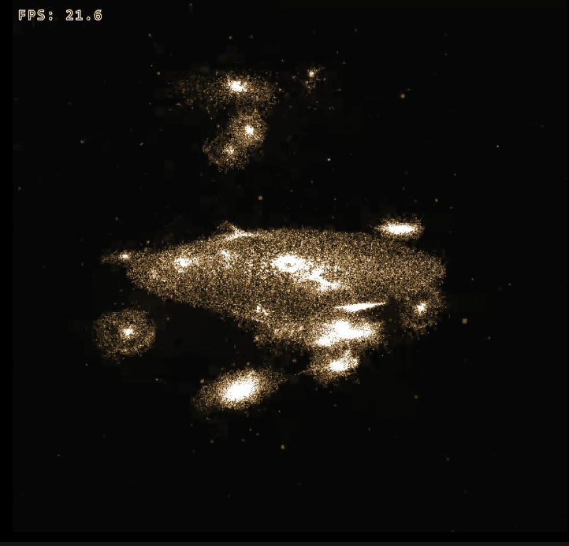

Java / LWJGL · GLSL compute · OpenGL 4.6
Barnes–Hut, one frame on the GPU.
GravityChunk is an n-body simulation. The Java program creates the window and the starting scene. Sorting, the spatial tree, forces, and merges then run as compute shaders.
- >32 million bodies, realtime
- One mass for a distant group
- Blackbody color from mass and density
- One splat for a far cluster

What a frame does
Bodies are one list of nodes. Empty slots are packed to the end before the tree is built. A body is empty when it left the bounds, or when a merge consumed it. The pack is a radix pass with two buckets, alive and dead (bh_dead.comp).
-
Morton encode
bh_morton.compPositions are normalized into the simulation’s axis-aligned bounding box. Each axis is quantized into 221 bins, from 0 to 2,097,151, and those bits are interleaved into a 63-bit code. Nearby codes are usually nearby in space. An unbounded run rebuilds the box every step from inlier bodies, and the box may grow by at most 5% in one step.
-
Radix sort
bh_radix.compOne thread per body. The 63-bit key is sorted four bits at a time, sixteen buckets. Each digit is four kernels: a histogram per workgroup, an inclusive scan of those histograms, a scan that finds where each bucket starts in the output, and a scatter. A body’s destination is the bucket base, plus that bucket’s running sum across earlier workgroups, plus its index inside its own workgroup.
-
Binary tree
bh_tree.compSorted Morton codes become a binary radix tree by the Karras 2012 construction. The tree is binary. Leaves are the bodies. Internal nodes then receive mass, center of mass, and a bounding box. A parent is queued when both children have checked in. Propagation runs for 64 passes. The dispatch halves each pass, with a floor of four workgroups.
-
Force
bh_force.compEach body walks from the root on an explicit stack of 64 nodes. An internal node is treated as one mass when
halfLongestSide / distance < θhalfLongestSideis half the longest edge of that node’s box. If the test fails, both children are pushed. A leaf always contributes, except the body itself. Overlapping leaves either collide — an impulse and a position correction — or append a merge task, depending on the mode. Acceleration isG M r / dist³, withdist² = |r|² + softening.Gcomes from the unit set. Velocity is updated first, then position. -
Merge
bh_merge.compMerge tasks run in parallel. The kernel does not follow a merge created by another merge, and tasks can race. A large timestep is not deterministic. A small timestep is.
Kernel order
bh_main.comp is the entry point. Shared structs and the workgroup size live in common.glsl.
| File | Work |
|---|---|
bh_init.comp |
Initial buffers |
bh_update.comp |
Reset queues and refresh the body count |
bh_dead.comp |
Count, exclusive scan, scatter the empty slots |
bh_morton.comp |
Rebuild the box, then encode |
bh_radix.comp |
Histogram, bucket scan, global scan, scatter |
bh_tree.comp |
Build the tree, init leaves, propagate mass |
bh_force.comp |
Walk the tree, accelerate, write the new state |
bh_merge.comp |
Apply merge tasks |
bh_debug.comp |
Readback for debugging |
Starting scene
A setup window runs before GPU buffers are allocated. It builds a PlanetGenerator, which emits bodies in chunks of 100,000 so the full list is not held in one Java array. The same screen can place disks, boxes, single bodies, and the solar system by hand.
| Preset | What it builds |
|---|---|
| Empty | No objects. Add some before launch. |
| Solar System | solar_system.json, 24 bodies. Time unit is hours. |
| Small Galaxy | One disk of 50,000 bodies. Time unit is seconds. |
| Merger, scaled | Center disk of 80,000 plus four satellites of 25,000. |
| Merger, full | Center disk of 600,000 plus thirteen satellites of 250,000. About 3.8 million bodies. |
Mass, density, and length for those galaxy presets are solar masses, a stellar density, and astronomical units. The gravitational constant uploaded to the GPU is the one that matches the chosen unit set.
Java side
- simulation
- Dispatch, rendering, the planet generator, and unit sets.
- gpu
- Compute programs, SSBOs, and packing data to the device.
- ui
- Setup screen, and a settings pane that edits Java and GPU values while the sim runs.
- debug
- Dumps of buffer and uniform state.
- record
- F6 writes PNG frames to
captures/.
Run it
- Windows 10 or 11, 64-bit
- NVIDIA GPU and a current driver
- The window requests an OpenGL 4.6 compatibility context
- JDK 17 or newer, and Maven, to build from source
The compute shaders are GLSL 4.30 and enable GL_NV_gpu_shader5 so Morton codes can be 64-bit integers. CUDA is not part of the build. LWJGL natives in the project are the Windows set.
mvn compile exec:java
mvn -DskipTests package
java -Xmx8g -jar target\gravitychunk-1.0-SNAPSHOT.jarThe Windows installer is the setup exe attached to a GitHub Release. scripts/build-installer.ps1 produces it. F6 records a PNG sequence while the desktop app is running.